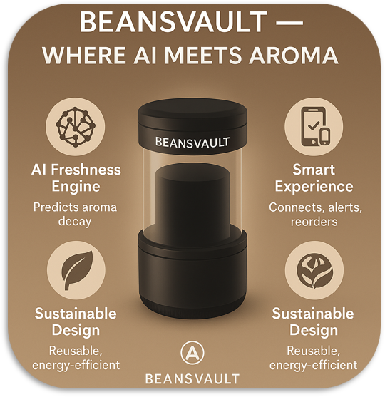
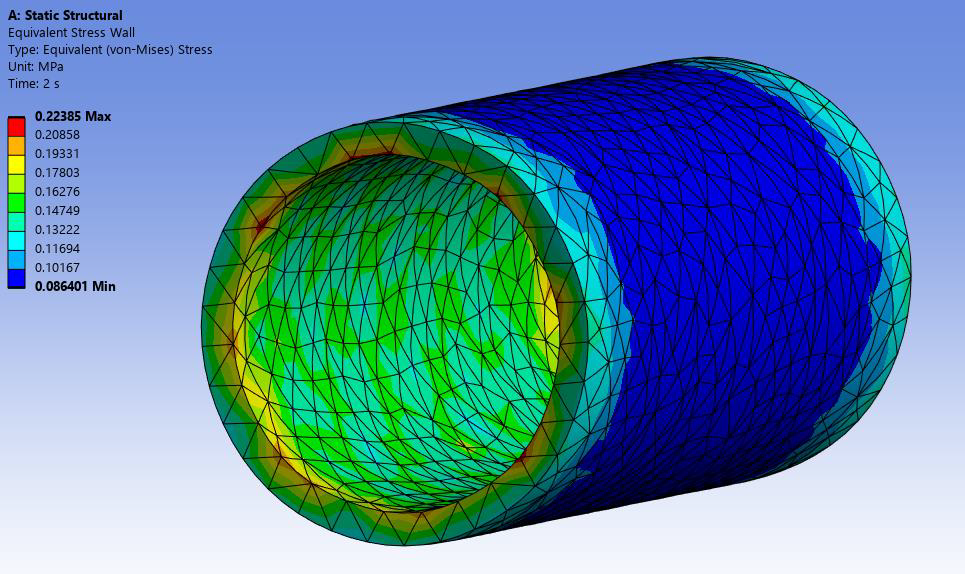
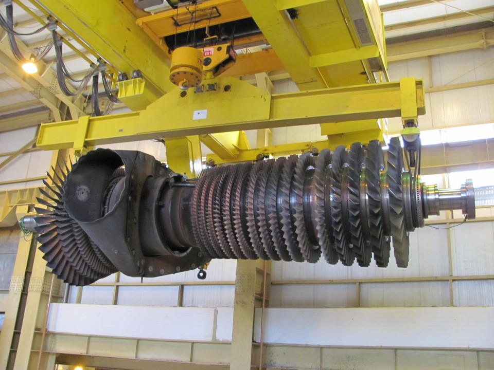
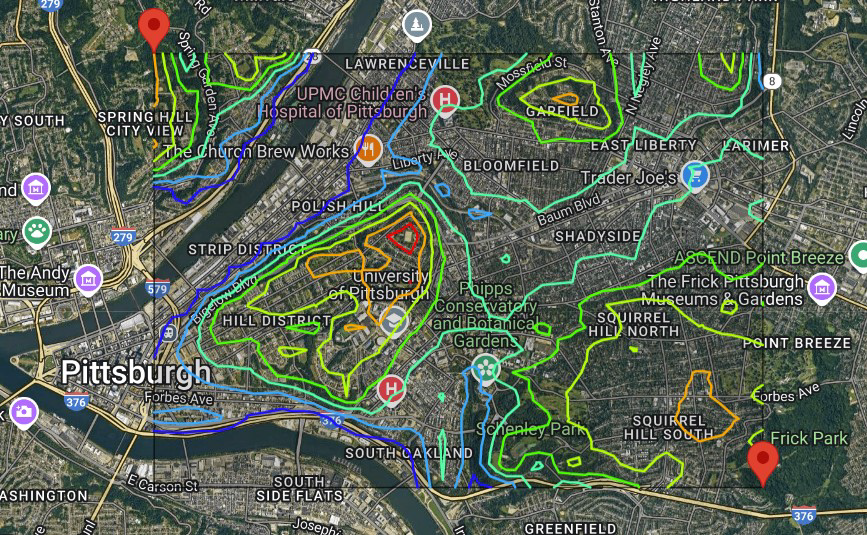
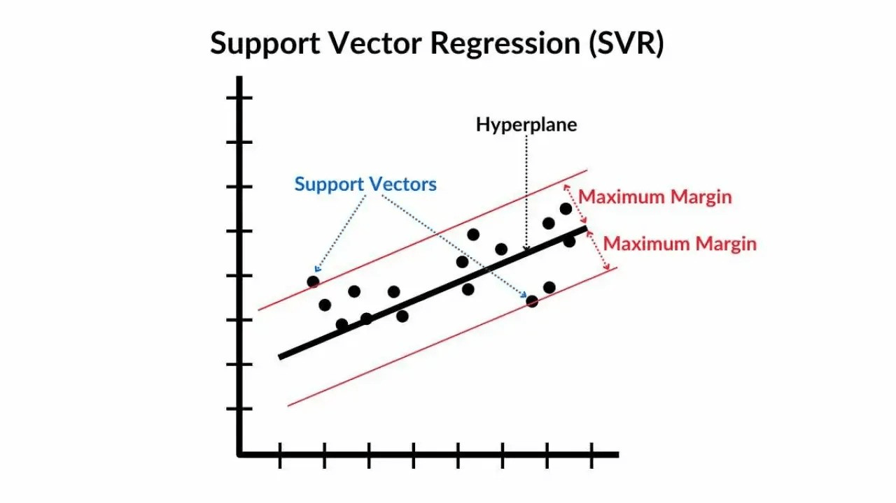

BEANSVAULT – Smart Coffee Bean Preservation System
Social Value: Helps reduce coffee waste and improves daily beverage quality through better bean preservation.

Intent: A smart airtight container designed to preserve coffee bean freshness using environmental monitoring and a subscription-based digital service. The system reduces waste and improves everyday user experience for coffee drinkers.
Skills / Tags: Product Design · IoT Concept · User Research · System Architecture · UI/UX · Business Model Design.
Results: Defined airtight container mechanism, sensor layout, freshness-tracking workflow, and user dashboard concept. Created a complete system model combining hardware design and subscription features.
Discussion/Contribution: Led concept development, performed research on freshness degradation, designed sensing architecture, structured the subscription model, and produced mockups and system diagrams.
Balloon Angioplasty Simulation – Stent Expansion in a Partially Blocked Artery
Social Value: Supports safer cardiovascular treatments by evaluating stent expansion and arterial stress before real procedures.

Intent: A finite-element simulation of a stent expanding inside an artery narrowed by plaque, modeling the Balloon Angioplasty procedure and analyzing radial deformation, stress distribution, and lumen restoration.
Skills: ANSYS · Finite Element Analysis · Solid Mechanics · Biomedical Simulation · Stress Analysis · Deformation Modeling.
Results: Simulated radial stent expansion, quantified arterial deformation, identified stress concentrations at plaque–artery interface, and evaluated effectiveness of lumen opening.
Contribution: Set up the artery–stent geometry, defined material models and contact conditions, ran FEA load cases, and analyzed stress and deformation patterns to evaluate treatment effectiveness.
Gas Turbine Overhaul – Reliability and Performance Improvement
Social Value: Enhances power plant reliability and minimizes community outages by improving turbine health and performance.

Intro: Major overhaul project focused on restoring performance and preventing failures in a utility-scale gas turbine serving a local power plant.
Method: Teardown inspection ▪ Damage classification ▪ Trend analysis ▪ Component refurbishment planning ▪ Assembly alignment checks.
Results: Post-overhaul performance showed lower EGT and improved efficiency; cracked hot-gas-path components replaced or repaired; reduced failure risk.
Contribution: Participated in teardown inspection, documented damage and wear, assisted with refurbishment planning, and summarized post-overhaul performance improvements for the maintenance team.
Neural Network Altitude Prediction for Pittsburgh
Social Value: Enables better urban planning and flood-risk assessment through accurate altitude prediction across Pittsburgh.

Intro: Built a neural network to predict altitude across Pittsburgh using coordinate-based features, then used the model to identify the region’s highest predicted peak.
Method: Python · Machine Learning · Neural Networks · Regression · Data Cleaning · Model Evaluation.
Results: Trained a feed-forward network with less than 1 m RMSE on validation data; model correctly isolated the max-altitude zone and improved prediction accuracy vs. baseline linear regression.
Contribution: Developed the dataset, engineered features, tuned the neural network (layers, activation functions, learning rate), and performed error analysis and model validation.
Support Vector Regression for Engineering Data
Social Value: Improves engineering decision-making by predicting critical variables more accurately than linear models.

Intro: Machine learning model used to predict engineering variables more accurately than linear regression.
Method: Python • scikit-learn • Support Vector Regression (SVR) • Grid Search • Cross-validation.
Results: RBF-SVR outperformed linear models with lower MSE and higher R², especially at extreme values.
Contribution: Built end-to-end pipeline, tuned hyperparameters, evaluated generalization, and compared against baselines.
Physics-Informed Neural Network for Solving Differential Equations
Social Value: Provides reliable physics-based solutions in data-scarce scenarios by enforcing PDEs directly inside the neural network.

Intro: Demonstrates how physics-informed neural networks enforce PDEs and boundary conditions inside the loss function.
Method: Python • Automatic Differentiation • PDE residual minimization • Boundary loss terms • Collocation points.
Results: Model produced a smooth solution that matched the analytical reference and satisfied the governing equation.
Contribution: Implemented the PINN, defined the PDE residual loss, selected collocation points, and validated the solution.